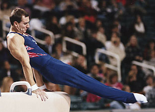

Mihai Bagiu (USA)
1994 US Pommel Horse Champion
1996 Olympian

Mihai was born on April 10, 1971
in Timisoara, Romania. He and his family emigrated to the USA in 1979, and
he became a US citizen ten years later. Mihai was coached by Ed Burch at
Gold Cup Gymnastics in Albuqueraue, NM.
Now living in Southern California with his wife, Kris, and children, he's a
personal trainer at Bodi Personal
Training in Newport Beach, CA.
Competition Results
1989
Winter Cup: 31st AA
1990
US Championships: 29th AA
US Olympic Festival: 9th AA
1991
US Championships: 34th AA
1992
US Championships: 34th AA
Winter Cup: 24th AA
1993
Blume Memorial: 6th AA
US Championships: 7th AA
Winter Cup: 13th AA
1994
US Championships: 5th AA, 1st PH, 2nd PB, 3rd HB
US Olympic Festival: 8th AA
USA-ROM Dual Meet: 2nd Team, 2nd AA
Winter Cup: 3rd AA
World Championships (Dortmund): 9th Team
1995
American Cup: 7th AA (prelims), 1st PH
Atlanta Gymnastics Invitational: 15th AA
Pan American Games: 1st Team, 8th AA, 2nd PH
US Championships: 2nd AA, 4th HB, 6th PH
USA-UKR Dual Meet: 2nd Team, 5th AA
World Championships: 9th Team, 5th PH
1996
Olympic Games: 5th Team
US Championships: 7th AA
US Olympic Trials: 7th AA
Winter Cup: 6th AA
This page was created on May 21,
2009.
© Gymn Forum